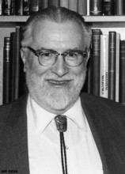

Please note: the AAS Obituaries are temporarily being hosted on this website while their full content is being ingested into the PubPub publishing platform newly adopted by the Bulletin of the American Astronomical Society. When the migration is complete, your existing links will take you to the final, migrated content. Contact peter.williams@aas.org with any questions.
Frank K. Edmondson (1912-2008)
Hanging in the basement of Kirkwood Observatory on the Indiana University campus is a battered sign, dated Aug 31, 1932, announcing "Indiana Univ. Eclipse Station." While the path of totality passed well north of Bloomington, IN, where only 80% of the Sun's disk was covered, the eclipse made a lasting impression on the young Frank Kelley Edmondson, then an undergraduate student at Indiana University.
Frank was born on August 1, 1912, in Milwaukee, Wisconsin, to Clarence Edward Edmondson and Marie (Kelley) Edmondson. Growing up in Seymour, Indiana, he became interested in astronomy at an early age, reading voraciously from the "Book of Knowledge" at an aunt's house (The Book of Knowledge Set of Encyclopedias). He learned magic and was acquainted with Blackstone, the magician. He took ballet lessons and performed with his brother. He was a YMCA Camp Counselor at Camp Bedford where he taught natural sciences to the campers. He worked one summer as a cook on an ore boat on Lake Michigan. In high school he sang in a musical - and wore a false beard. In 1944 he grew his own beard, one of only two on the IU faculty at the time, and he kept the beard all the many years since. In 1996, Frank was elected to the Shields High School "Wall of Fame."
After graduating from Shields High School in 1929, Frank enrolled at Indiana University. He was a member of the IU intercollegiate debate team for four years. He was initiated into Phi Beta Kappa as a junior and was a member of Sigma Xi. He graduated in 1933 and earned a Master's degree in 1934 based on a thesis ("An Analysis of the Radial Velocities of Twenty-One Globular Star Clusters") and professional experience earned while holding the Lawrence Fellowship at the Lowell Observatory in Flagstaff, Arizona in 1934-35, where he worked as an observing assistant to Clyde Tombaugh. Despite his close association with Lowell, Tombaugh, and Pluto, Frank approved of the decision of the International Astronomical Union in 2006 to change Pluto's status to a dwarf planet.
While in Flagstaff, Frank met Margaret Russell, the youngest daughter of famed American astronomer Henry Norris Russell of Princeton University. The young couple instantly bonded and became engaged after only two weeks. He and Margaret were married on November 24, 1934. Frank and Margaret remained inseparable until her death in 1999, always together at meetings of the American Astronomical Society, the International Astronomical Union, and elsewhere.
Studying under astronomer Bart Bok, Frank received his Ph.D. in astronomy in 1937 from Harvard University, where he completed his dissertation on "The Absorption of Light in the Galaxy," and joined the faculty as an Instructor in Astronomy at Indiana University. Frank became the second member of the Astronomy Department, with Professor W. A. Cogshall, housed in Kirkwood Observatory. Frank served as chair of the department from 1944 until 1978. Under his leadership, the University acquired the Goethe Link Observatory in Brooklyn, IN, (a gift from Dr. Goethe Link, a noted Indianapolis physician and avid amateur astronomer), established a graduate program in astronomy, and enlarged the Department of Astronomy from two faculty members to eight. In one of his favorite stories, Edmondson bet Professor Cogshall a chocolate ice cream cone that President Herman B Wells would fund a new position for the Department, knowing full well that Wells had already agreed. Frank retired from IU in 1983.
When many asteroids were lost during World War II, Frank and his colleague James Cuffey established the Indiana University Asteroid Program. Frank is credited with determining the orbits of 119 asteroids from 7000 photographic plates taken with a 10" astrographic telescope at the Goethe Link Observatory. Frank selected names for each of these asteroids, honoring IU Presidents, prominent scholars, and important Hoosier and astronomical landmarks. Asteroid 4300 Marg Edmondson he named for his wife Margaret.
During his years as a faculty member at Indiana University, Frank advised Dr. Alfred Kinsey on statistical techniques for his pioneering studies of human sexuality, and also shared with Kinsey an abiding interest in classical music. The music and the programs at the IU School of Music brought great joy to Frank over his career at IU. His memory for programs he had heard in the past was phenomenal.
Frank is best known in Bloomington for his remarkable skill as an educator. He loved teaching. He taught elementary astronomy to literally thousands of students, often taking advantage of his knowledge of music to introduce astronomical topics with appropriate musical selections. His popular, award-winning, televised astronomy course was broadcast to students throughout the state and is widely remembered even today.
Following in the tradition of IU's legendary President Herman B Wells, whom he greatly admired, Frank devoted his career to service. In 1957 Indiana University became one of the seven founding members of the Association of Universities for Research in Astronomy (AURA), which founded the Kitt Peak National Observatory. Following the formation of AURA, Frank served as a Program Director for Astronomy at the National Science Foundation (1956-1957), helping to assure funding for the new national observatory. He served as Vice President of AURA from 1957-1961, as President of AURA (1962-1965), and as a member of the Board of Directors (1957-1983). Upon his retirement in 1983, he became the AURA Historian writing "AURA and its US National Observatories" (Cambridge University Press, New York, 1997), based on his personal experience plus 10 years (1978-88) searching archives and taping 85 oral histories. In 1964 Frank was awarded the Order of Merit by the Republic of Chile for his work in helping to establish the Cerro Tololo InterAmerican Observatory. In 2007, he commemorated the 50th anniversary of the founding of AURA by naming one of the remaining Indiana asteroids Aurapenenta.
Frank served as the Treasurer of the American Astronomical Society for 21 years, from 1954 until 1975, and was also a leader of the Minor Planet Center of the International Astronomical Union, serving as its President from 1970-1973, and chairing the U.S. National Committee of the International Astronomical Union in 1963-1964. Frank was honored in 2001 for his attendance at American Astronomical Society (AAS) Meetings over a seventy year span 1931-2001. Professor Cogshall took Frank to his first AAS meeting at Perkins Observatory while he was still a junior at Indiana University. In his reminiscence in the American Astronomical Society's First Century volume, Frank recalls that Einstein played the violin at the banquet of the Princeton meeting in 1935, and that Koussevitsky conducted a concert by the Boston Symphony Orchestra in Harvard Yard at the 1936 meeting, Frank's fourth AAS meeting. Frank's fifth AAS meeting, in 1937, was held in Bloomington shortly after he joined the faculty.
Closer to home, Frank assisted Indiana University in many ways as it continued to grow during the 20th century, and he received a Distinguished Alumni Service Award from the University in 1997. His contributions to astronomy were honored by the Indiana State Legislature on the centennial of the Department of Astronomy in 1995. Frank's commitment to service is a hallmark of our campus, and one that the Department of Astronomy is proud to continue.
Indiana University Emeritus Professor Frank Kelley Edmondson passed away on December 8, 2008, at Bloomington Hospital, at the age of 96. His wife, his parents and two brothers (W. T. Edmondson and Richard H. Edmondson) pre-deceased him. He is survived by his two children: Margaret Olson (Edward) of Urbana, Illinois, and Frank K. Edmondson Jr. (Vickie) of Seattle, Washington, a sister-in-law (Sally Edmondson of Philadelphia) and by six grandchildren (Mylene Melson, Yvonne Edmondson, Catherine Edmondson, Eric Olson, Jeffrey Olson, Charissa Young). He is also survived by twelve great-grandchildren, three great-great-grandchildren, and by several nieces and nephews.
Frank enjoyed the many coincidences that sparked new connections and initiatives in his career. He liked to say that he was the right person in the right place at the right time. That was almost always true, and often because Frank himself understood and anticipated what would be needed, and made sure to be ready with an answer or guidance. He has been an inspiration to generations of students and colleagues and will be long remembered.
Obituary written by: Catherine A. Pilachowski (Indiana university), Margaret K. Edmondson Olson, Frank K. Edmondson, Jr.
BAAS Citation: BAAS, 2009, 41, 1202
SAO/NASA ADS Bibcode: 2009BAAS...41.1202P